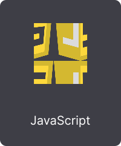
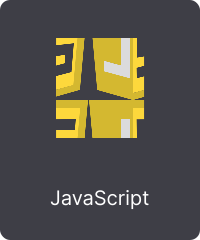
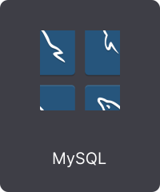
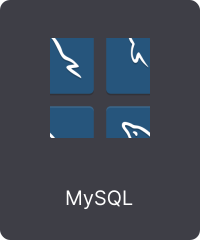

Oscar Bardales
Oscar Bardales
Backend & Cloud Engineer especializado en arquitecturas serverless y sistemas escalables.
Diseño APIs seguras, plataformas eficientes y soluciones en la nube usando AWS y GCP, optimizando rendimiento, costos y escalabilidad.
AWS
GCP
Serverless
Node.js
Laravel
Flutter
Explora mis proyectos, arquitectura y soluciones construidas para entornos reales.
 



 
